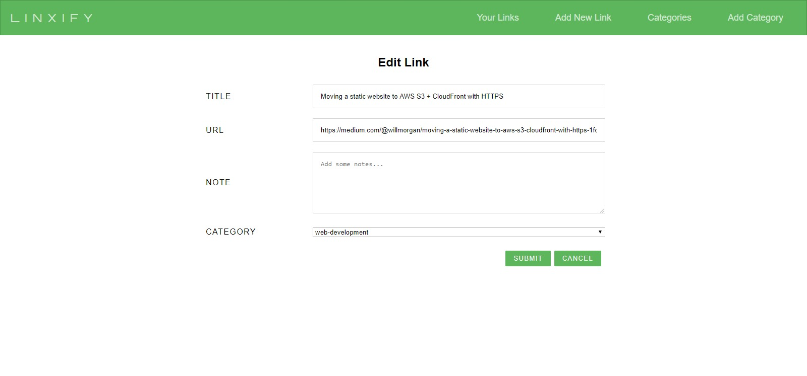

Login
Demo Username: DemoUser
Demo Password: Linxify2018

Save a link while browsing the web
Simply enter linxify.net/ in front of any URL and your link will be saved to the cloud and
accessible
from any device anywhere. Watch the example below for an illustration.
To save a link with a category, after linxify.net/, simply add the category name followed by two dashes(--) ,
such as linxify.net/news--https://www.foxnews.com. Please note that no spaces are allowed in the
category name.

Search for links
Use the search bar to filter your list of links. If the search entered is found in then URL or the title of a link, that will be displayed, while all others are filtered out.

Edit or add a link manually
You can also edit or add a link directly within the website, with the option to add some notes about the link you are entering.

View, edit and add categories